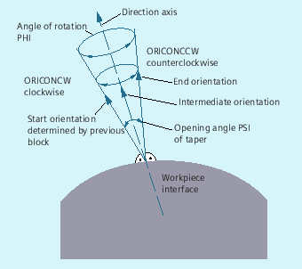

With extended orientation it is possible to execute a change in orientation along the peripheral surface of a taper in space. The orientation vector is interpolated on the peripheral surface of a taper using the ORICONxx modal command. The end orientation can be programmed with ORIPLANE for interpolation on a plane. The start orientation is usually defined by the previous blocks.
The end orientation is either defined by specifying the angle programming in the Euler or RPY angle using A2, B2, C2 or by programming the rotary axis positions using A, B, C. Further programming details are needed for orientation axes along the peripheral surface of a taper:
Rotary axis of taper as a vector with A6, B6, C6
Opening angle PSI with identifier NUT
Intermediate orientation outside of the taper with A7, B7, C7
| Note |
Programming direction vector A6, B6, C6 for the rotary axis of the taper The programming of an end orientation is not absolutely necessary. If no end orientation is specified, a full outside taper with 360 degrees is interpolated. Programming the opening angle of the taper with NUT=angle An end orientation must be specified. A complete outside taper with 360 degrees cannot be interpolated in this way. Programming the intermediate orientation A7, B7, C7 on the outside of the taper An end orientation must be specified. The change in orientation and the direction of rotation is defined uniquely by the three vectors Start orientation, End orientation and Intermediate orientation. All three vectors must be different. If the programmed intermediate orientation is parallel to the start or end orientation, a linear large-circle interpolation of the orientation is executed in the plane that is defined by the start and end vector. |
Extended orientation interpolation on the peripheral surface of a taper | |
or
| Interpolation on the outside of a taper with direction vector in the clockwise/counter-clockwise direction of the taper and end orientation or tangential transition and or polynomials for angle of rotation and |
| Interpolation in the plane (large-circle interpolation) |
| Interpolation on the peripheral surface of a taper in the clockwise direction |
| Interpolation on the peripheral surface of a taper in the counter-clockwise direction |
| Interpolation on the peripheral surface of a taper with tangential transition |
| Programming of a rotary axis of the taper (normalized vector) |
| Opening angle of taper in degrees |
| Traverse angle less than or equal to 180 degrees |
| Traverse angle greater than or equal to 180 degrees |
| Interpolation on the peripheral surface of a taper |
| Intermediate orientation (programming as normalized vector) |
| Angle of rotation of the orientation about the direction axis of the taper |
| Opening angle of the taper |
Possible polynomials | Apart from the different angles, polynomials can also be programmed up to the |
| Program code | Comment |
|---|---|
| … | |
| N10 G1 X0 Y0 F5000 | |
| N20 TRAORI(1) | ; Orientation transformation ON |
| N30 ORIVECT | ; Interpolate tool orientation as a vector. |
| … | ; Tool orientation in the plane. |
| N40 ORIPLANE | ; Select large-circle interpolation. |
| N50 A3=0 B3=0 C3=1 | |
| N60 A3=0 B3=1 C3=1 | ; Orientation in the Y/Z plane is rotated through 45 degrees, orientation (0,1/√2,1/√2) is reached at the end of the block. |
| … | |
| N70 ORICONCW | ; Orientation programming on the outside of the taper: |
| N80 A6=0 B6=0 C6=1 A3=0 B3=0 C3=1 | The orientation vector is interpolated on the outside of a taper with the direction (0,0,1) up to the orientation (1/√2,0,1/√2) in the clockwise sense, the angle of rotation is 270 degrees. |
| N90 A6=0 B6=0 C6=1 | ; The tool orientation goes through a full revolution on the outside of the same taper. |